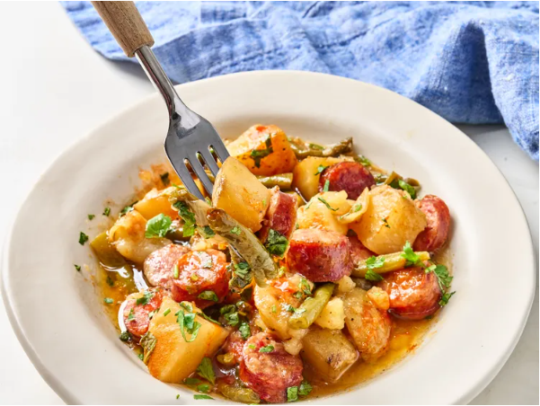

HOME
Swamp Potatoes and Sausage

These swamp potatoes and sausage are so hearty, full of flavor and comforting. Highly recommended serving alongside crusty bread for soaking in the delicious juices.
Ingredients
- 3 pounds gold potatoes, cut into 1 1/2-inch pieces
- 1 small onion, chopped
- 1 onion
- 1 1/2 tablespoons olive oil
- 1 teaspoon kosher salt
- 1/2 teaspoon freshly ground black pepper
- 1 1/2 teaspoons Cajun seasoning
- 1 pound smoked sausage, sliced
- 1 pound fresh green beans, cut into 2-inch pieces
- 1 packet onion soup mix
- 1/2 cup butter
Steps
- Add potatoes and chopped onion to the bottom of a slow cooker. Drizzle with olive oil and season with salt, pepper, and Cajun seasoning. Toss to coat evenly.
- Layer the sliced smoked sausage and green beans on top. Sprinkle with onion soup mix and garlic powder. Place pieces of butter evenly over the top.
- Cover and cook on Low until potatoes are tender and everything is well flavored, 6 to 7 hours, stirring a few times throughout the process and just before serving. Serve warm.